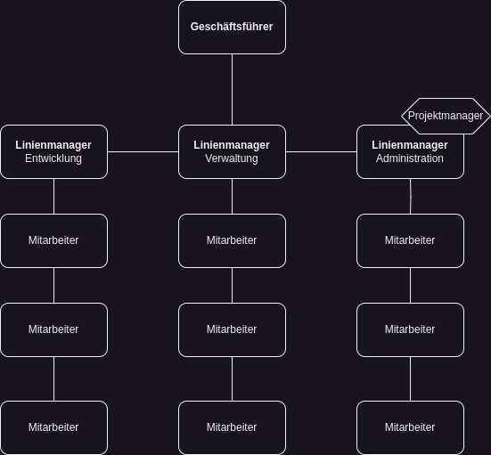
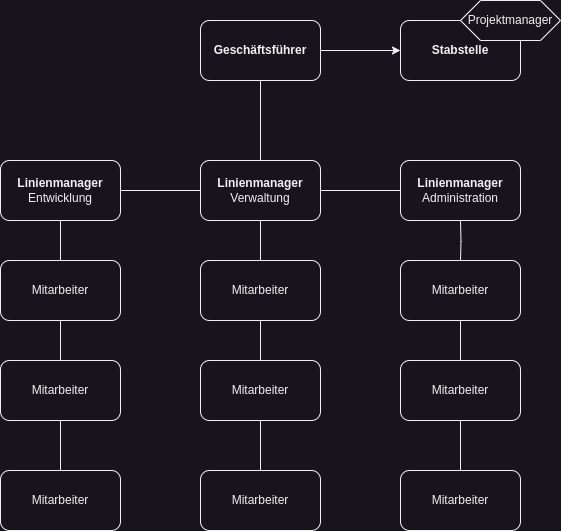
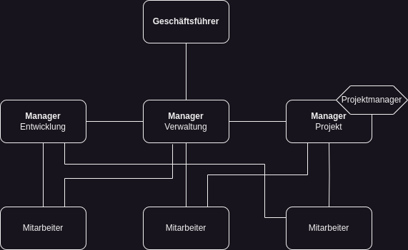
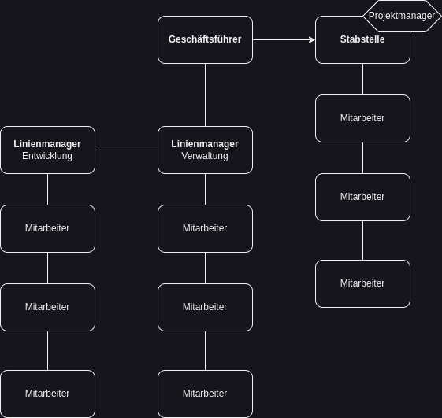
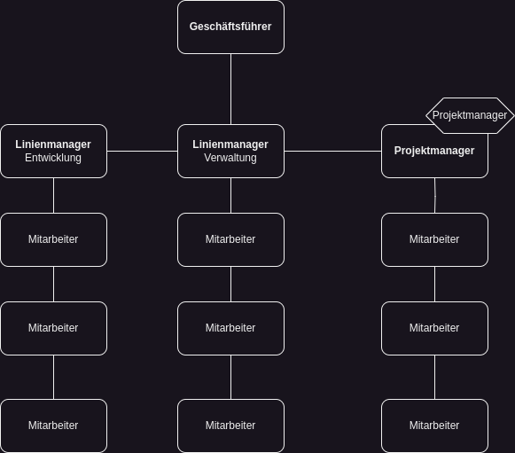

Aufbauorganisationen
KOM-ITIL
Sebastian Meisel
Linienorganisation
- Einzelne Linie der Autorität
- Klare Befehlskette
- Funktionale Abteilungen
- Vorteile
- Klare Hierarchie
- Schnelle Entscheidungsfindung
- Einfache Kommunikation
- Nachteile
- Eingeschränkte Spezialisierung
- Überlastung von Führungskräften
- Schwierigkeiten bei der Anpassung

Stablinienorganisation
- Einzelne Linie der Autorität
- Klare Befehlskette
- Funktionale Abteilungen
- Stabstellen zur Unterstützung der Linienmanager
- Vorteile
- Klare Hierarchie
- Schnelle Entscheidungsfindung
- Einfache Kommunikation
- Spezialisierung und Expertise der Stabstellen
- Entlastung der Linienmanager
- Flexibilität und Anpassungsfähigkeit
- Nachteile
- Eingeschränkte Spezialisierung
- Keine direkte Weisungsbefugniss der Stabstelle gegenüber Mitarbeitern
- Schwierigkeiten bei der Anpassung

Mehrlinienorganisation
- Mehrere Linien der Autorität
- Parallele Befehlsketten
- Funktionale Abteilungen mit eigenen Linien der Autorität
- Vorteile
- Mehr Flexibilität
- Bessere Spezialisierung
- Effektive Nutzung von Ressourcen
- Nachteile
- Komplexität
- Koordinationsprobleme
- Mögliche Konflikte

Matrixorganisation
- Mitarbeiter in funktionalen Abteilungen und Projektteams
- Horizontale und vertikale Kette der Autorität
- Mehrere Vorgesetzte, einschließlich funktionaler Vorgesetzter und Projektmanagern
- Vorteile
- Mehr Flexibilität
- Effiziente Ressourcennutzung
- Bessere Kommunikation und Zusammenarbeit
- Nachteile
- Komplexität
- Konflikte
- Schwierige Entscheidungsfindung

Stab-Projektorganisation / Projektkoordination
- Einzelne Linie der Autorität für das Projektmanagement
- Zusätzliche Stabstellen zur Unterstützung des Projektmanagers
- Projektteams arbeiten unter der Leitung des Projektmanagers
- Vorteile
- Klare Verantwortlichkeiten
- Spezialisierung und Expertise
- Effektive Ressourcennutzung
- Nachteile
- Kommunikationsherausforderungen
- Potenzielle Konflikte
- Zeit- und Arbeitsaufwand

Reine Projektorganisation
- Keine permanente funktionale Struktur
- Organisation in Projektteams
- Jedes Projektteam hat einen eigenen Projektmanager
- Vorteile
- Fokussierte Expertise
- Effiziente Ressourcennutzung
- Nachteile
- Mangelnde Flexibilität
